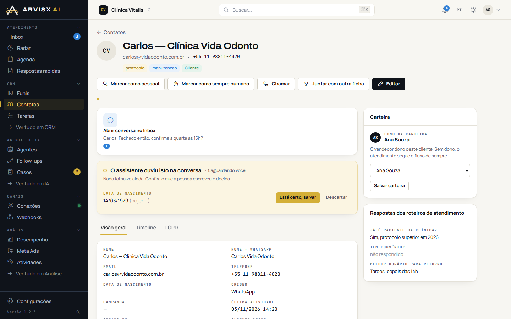
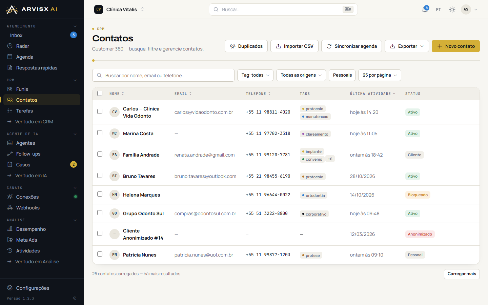
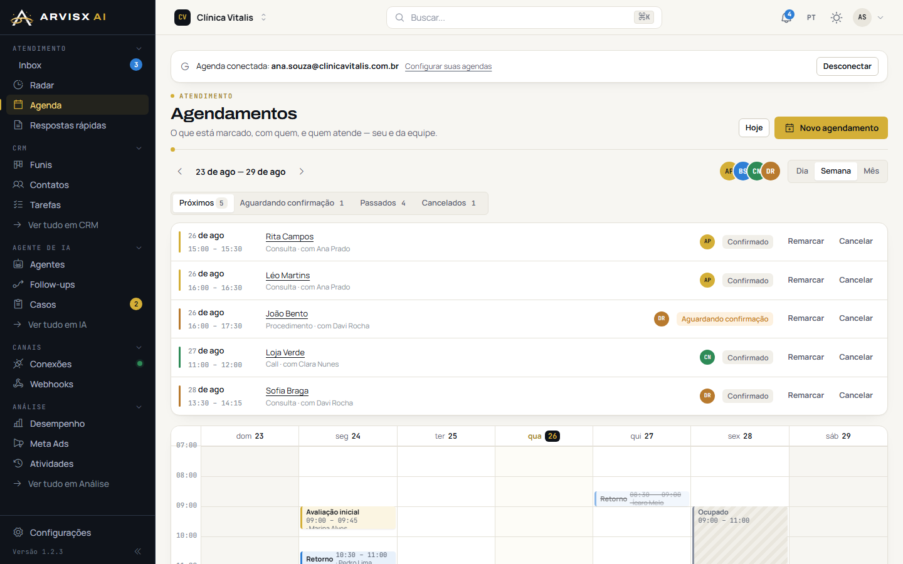
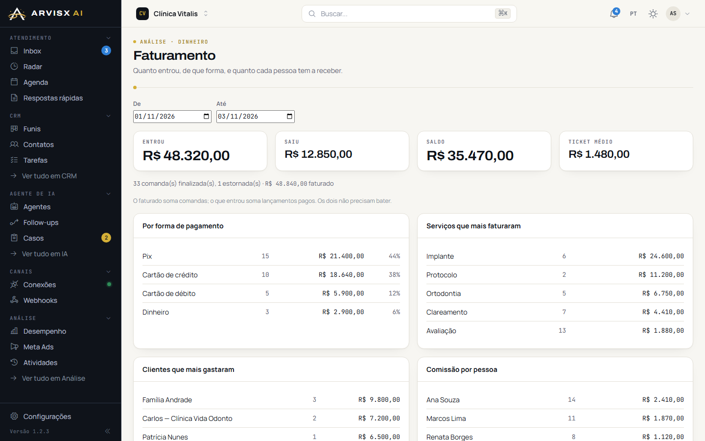

O WhatsApp
As conversas chegam a qualquer hora. Quem respondeu, quem ficou sem resposta e quem já fechou se misturam na mesma lista.
CRM com agentes de IA
Para assessorias, escritórios e consultorias que vendem pelo WhatsApp. A Arvisx configura o CRM para o seu negócio e cuida dos agentes de IA por você.
Mensalidade com a configuração inclusa. Sem taxa de setup.

A dor
As conversas chegam a qualquer hora. Quem respondeu, quem ficou sem resposta e quem já fechou se misturam na mesma lista.
O controle vive numa planilha que só uma pessoa entende. Quando ela sai de férias, ninguém sabe em que pé está cada cliente.
Cada proposta é montada do zero, num arquivo solto. Enviar, lembrar o cliente e saber se ele abriu vira trabalho manual.
O Arvisx CRM junta os três num lugar só. E põe um agente de IA para atender, organizar e acompanhar cada lead, enquanto a sua equipe cuida do que só gente resolve.
O CRM
Um produto só, com as mesmas telas para todos, configurado pela Arvisx para o jeito que a sua empresa trabalha.
Cada serviço tem o seu caminho. Um funil de cidadania italiana, por exemplo, segue as etapas reais do processo.
Campos personalizados por funil, documentos anexados e os dados do contato no mesmo cartão.




Cada pessoa entra com o seu login e vê um menu enxuto, só com o que usa. Sem telas técnicas, sem configuração para aprender.
A IA fica com a Arvisx
As telas de IA, automações e integrações não aparecem para a sua equipe. A Arvisx configura e opera os agentes por você, e ajusta quando o seu negócio muda.
Serviços do agente de IA
Cada serviço é ajustado ao que você vende, a quem você atende e ao jeito que a sua equipe trabalha.
A qualquer hora, em português e com tom natural. O agente descobre o interesse do lead e filtra spam e ofensa.
Grava o interesse, cria o lead na etapa certa e aplica etiquetas por serviço e país.
Monta a proposta, envia o link ao cliente, move o lead no funil e avisa a equipe.
Marca no Google Agenda com link do Meet e usa a ata da reunião para montar a proposta.
Prepara o contrato preenchido e mostra para a equipe. Só envia depois do "ok" de uma pessoa.
Follow-up, retomada, nutrição e reativação de quem sumiu, respeitando a janela de 24 h do WhatsApp.
Quando alguém do time assume a conversa, o agente para. Dúvidas e ações sensíveis passam pela equipe.
Resumo diário e relatório semanal para quem gerencia, e distribuição dos leads entre os vendedores.
Como funciona
Você nos conta o que vende, como atende e o que trava hoje. A gente mostra o CRM com o seu cenário.
Funis, campos, equipe, propostas e os agentes de IA, do jeito que o seu negócio funciona.
Sua equipe entra e trabalha. A Arvisx acompanha os agentes e ajusta o que for preciso.
Para quem é
Negócios em que o cliente chega pelo WhatsApp, precisa de orientação e fecha depois de uma proposta.
Cidadania, vistos, imigração e processos com etapas longas.
Advocacia e contabilidade que atendem e fecham pelo WhatsApp.
Negócios que vendem diagnóstico, projeto e acompanhamento.
Agências, clínicas e intercâmbio, quando cada cliente é um projeto.
Perguntas frequentes
É uma mensalidade com a configuração inclusa, sem taxa de setup. O valor depende do projeto: quantos funis, quantas pessoas e quais serviços do agente você vai usar. A gente fecha o número na demonstração.
Em um ambiente controlado pela Arvisx. A sua equipe acessa com login próprio, e cada pessoa vê só o que o papel dela permite.
Sim. Funis, etapas, campos, equipe, propostas e os agentes de IA são configurados pela Arvisx. Você usa o CRM; nós operamos a IA.
Não. As telas de IA, automações e integrações não aparecem para a sua equipe. Se o negócio mudar, você avisa e a gente ajusta o agente.
Dentro das regras combinadas com você, sim. Ações sensíveis, como enviar um contrato, passam pela aprovação de alguém da equipe. Quando uma pessoa assume a conversa, o agente para.
O número de WhatsApp da sua empresa é conectado ao CRM, e as conversas passam a chegar na Inbox. A gente faz essa conexão na implantação.